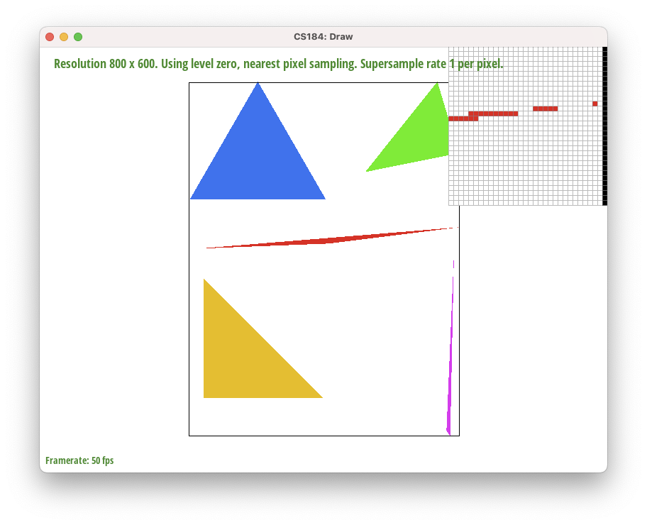
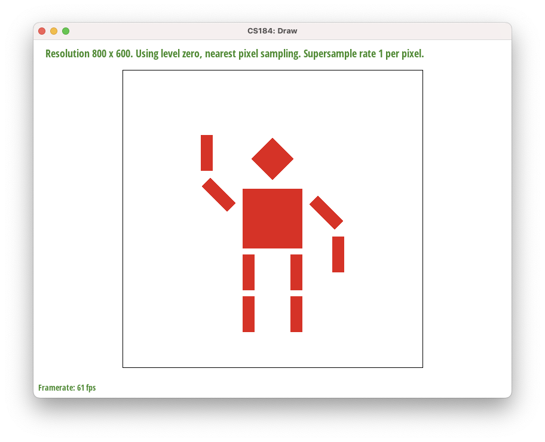
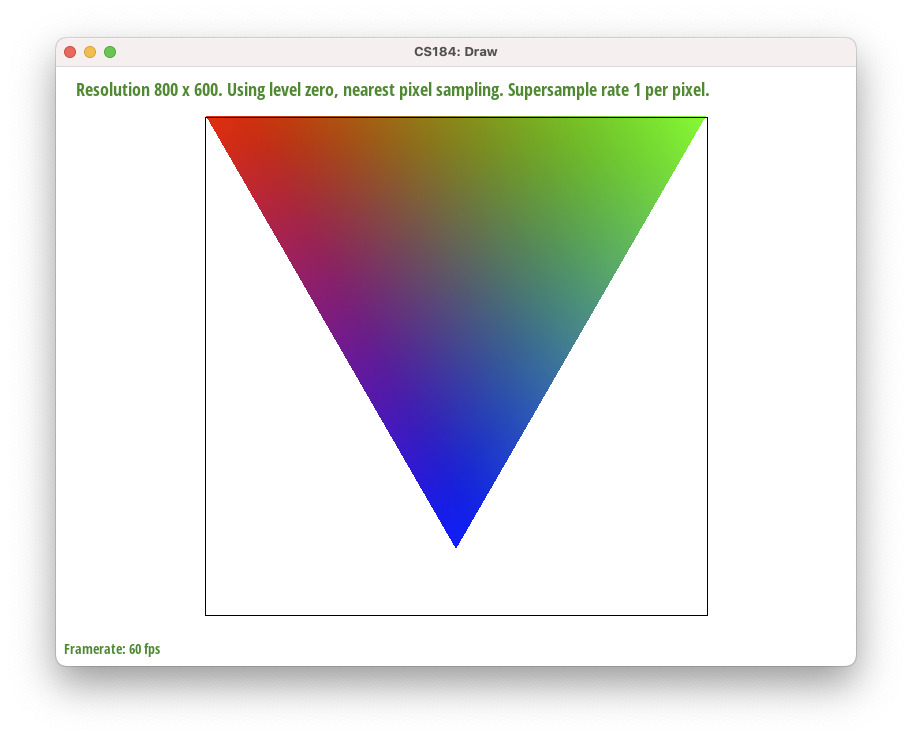
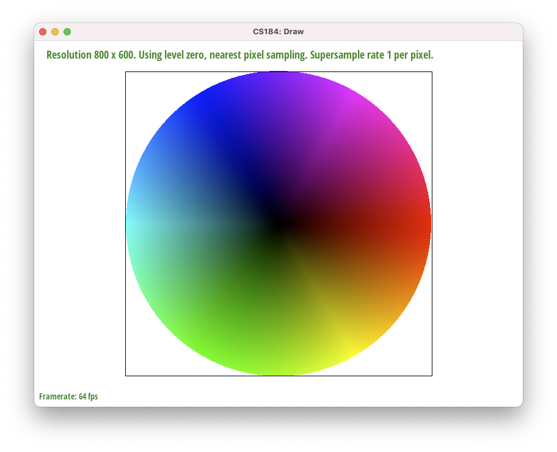
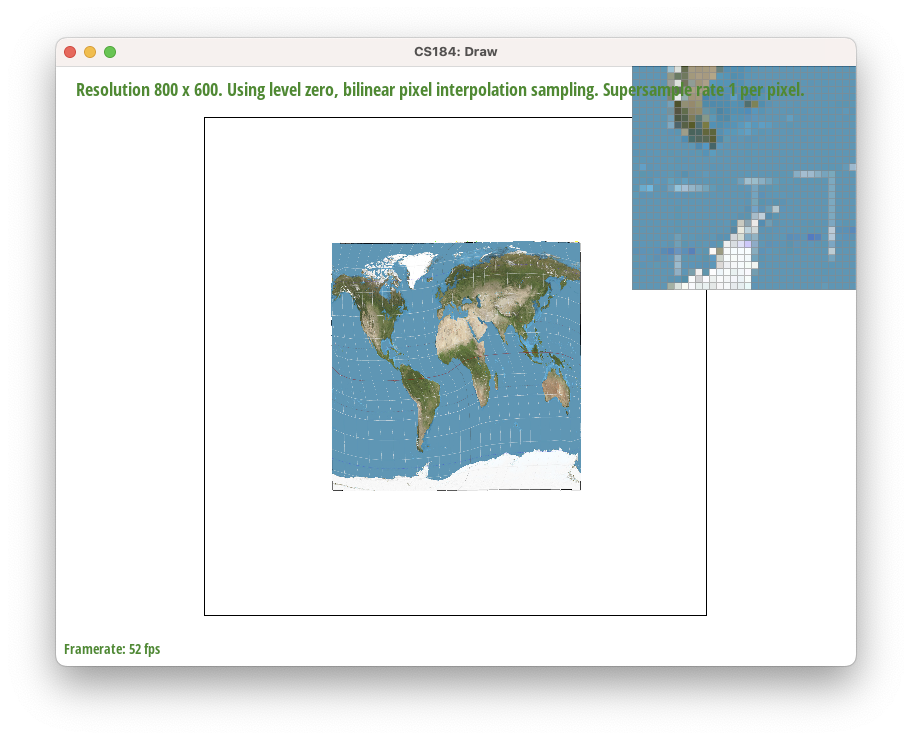
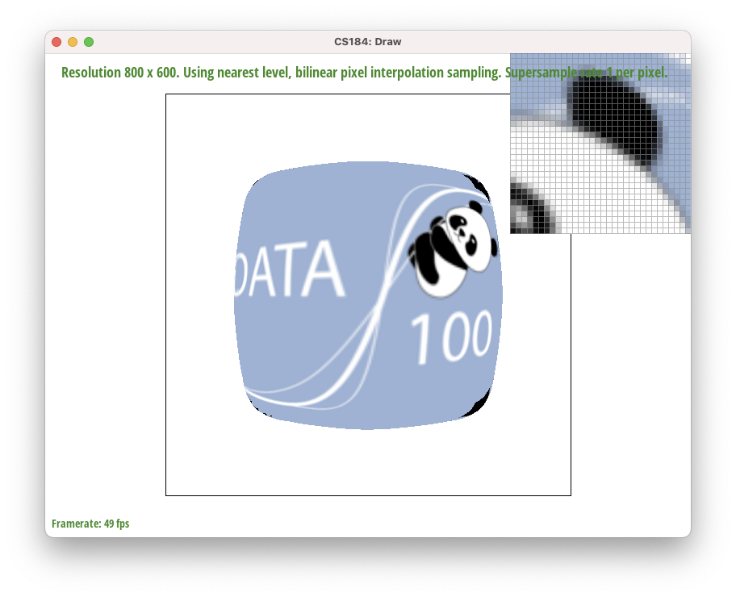
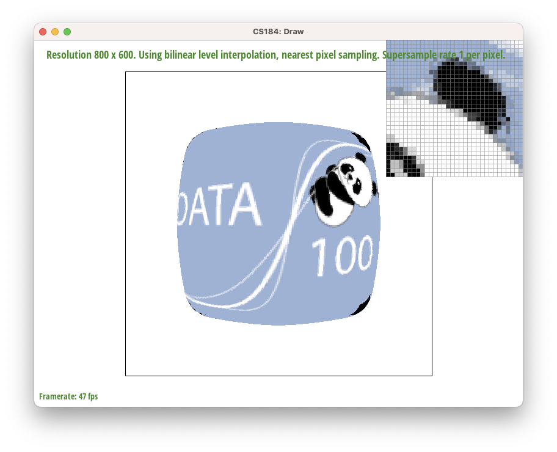
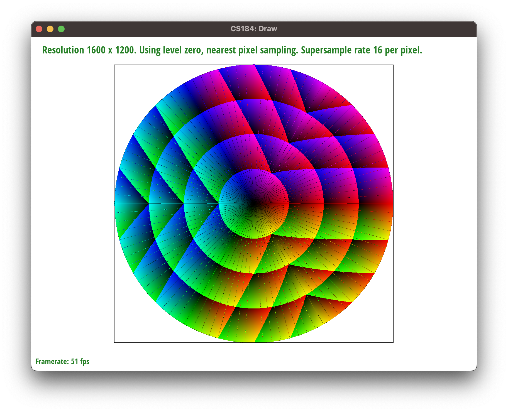

Overview
Give a high-level overview of what you implemented in this project. Think about what you've built as a whole. Share your thoughts on what interesting things you've learned from completing the project.
Section I: Rasterization
Part 1: Rasterizing single-color triangles
-
The way we rasterized our triangles was by first determining the smallest xy-axis aligned rectangular bounding box around the triangle.
We then iterated over each pixel in that bounding box and found the coordinate of the pixel's center (P).
Then, we iterated over pairs of vertices in counter-clockwise order (ex: A->B), and extended a vector from each anchor vertex (A) to the point (A->P) as well.
This way, by taking the dot product between vector A->P and Norm(A->B), we can determine which side of the triangle's edge P is on based on the sign of the dot product.
Because we process pairs of vertices in a circular order, if the signs of all the dot products are the same (or 0), then we know for sure that P is inside the triangle
-
Our algorithm is no worse than one that checks each sample within the bounding box of the triangle as ours is linear w.r.t. the size of the box that bounds the triangle.
We start out by finding the min and max
x and y coordinates of the triangle, and then iterate over each pixel in the bounding box using 2 nested for loops to retrieve the pixel locations.

-
Above, we can see the right-most vertex of the triangle in red, which is interesting as it has a lot of jaggies due to aliasing.
-
Extra credit:
We implemented a few optimizations to our rasterization algorithm to speed up the rendering process. We measured this with C++'s
std::clock() function, which returns the number of clock ticks that have elapsed since the program started.
| Optimization |
Speedup |
| No optimizations |
Approximately 9.9e-4ms to run on default settings |
First we made sure to move calculations that were the same each iteration (such as the 6 perpendicular vector components from the 3 vectors) outside of the for loop |
2% speedup |
We first use #pragma omp parallel for to parallelize the 2 outer for loops which iterate over each pixel in the bounding box |
14% speedup |
We then use the #pragma omp parallel for collapse(4) clause to parallelize the inner for loops as well |
22% speedup |
Part 2: Antialiasing triangles
-
Our supersampling algorithm is essentially the same as rasterization, except we increase the granularity by splitting up each pixel in the image into
sample_rate number of subpixels. We iterate through the super-sample pixels the same way, and perform the same checks on them to determine whether they lie inside the triangles.
If they do, then we set their sample_buffer entry equal to the color. Then, in resolve_to_framebuffer, we group the supersampled pixels into groups (squares) of sample_rate mini-pixels and average the color values of the pixels
to get the overall color of the normal pixel. Supersampling is useful because it helps anti-alias pictures and smooth out jaggies. Because of the averaging, a pixel is no longer binary, and can now be "partly inside" a triangle and take on a less saturated color value.
This not only helps smooth out jaggies due to the slight blurring, but it also helps connect thin/sharp parts of shapes that would otherwise be fragmented.
|
Supersampled at rate 1.
|
Supersampled at rate 9.
|
Supersampled at rate 16.
|
-
Above we see png screenshots of
basic/test4.svg with the default viewing parameters and sample rates 1, 4, and 16 compared side-by-side, with the pixel inspector positioned over an area that showcases the effect dramatically: we see less gaps between pixels as we increase the supersample rate.
-
There are clear artifact when rate is 1, as the corner of the triangle looks fragmented. This is due to the triangle being so thin that it is able to pass around the centers of pixels such that a supersampling rate of 1
would mistakenly think some of the pixels do not lie within the triangle at all. In reality, although the centers of these pixels do not lie within the triangle, the triangle still intersects the pixel and the pixel should still display a color (although one that is less saturated).
Higher supersampling rates fix this issue because it queries at a finer granularity and checks a ton of subpixels within each pixel, and the centers of some of those subpixels do end up being inside the triangle, leading to its "parent pixel" showing a faded color.
This in turn smooths out the jaggies and the fragmentations.
Extra Credit:
We tried doing supersampling with a different method, which is to simply take the average of the colors of the pixels that lie within the triangle. This is a much simpler method, but it does not work as well as supersampling with a higher granularity. Other approached we did ended up giving the same result such as using a different interpolation method (specifically we tried the low discrepancy method of using a Halton sequence to generate the sample points within the pixel instead of a uniform grid of points within the pixel as we did in our supersampling algorithm), so we decided to stick with supersampling in our final submission since the images are the exact same.
Part 3: Transforms

-
Above we see an updated version of
svg/transforms/robot.svg with cubeman doing something more interesting: they are waving goodbye to their old self.
Section II: Sampling
Part 4: Barycentric coordinates
-

Barycentric coordinates are exactly the concept of linear combinations in linear algebra.
We're essentially taking parts of some set of coordinates and mixing them together like paint to form a new coordinate.
However, in order to make sure the barycentric coordinate stays "inside" the original ones, we need to make sure the coefficients of this linear combination sum to equal 1.
Intuitively, we need this because we shouldn't be introducing more "paint volume" than we started with.
More formally, considering the edge case where the barycentric coordinate is exactly at one of the vertices and all the coefficients are 0 except for one. If that coefficient was not equal to 1, then the point would lie outside the shape.
As seen in the picture above, the color represents the barycentric coordinate (the mix of paint) inside the triangle. The gradient between each vertex appears to change linearly, which is because barycentric coordinates are linear combinations.
As the coordinate gets closer to one of the vertices, the color of that vertex shows much more strongly, which hints that the coefficient associated with that vertex is a much larger proportion of the total (1).

Part 5: "Pixel sampling" for texture mapping
Pixel sampling is the process of determining which pixel in the texture image to sample from based on the barycentric coordinates of the current pixel in the image.
This is done by multiplying the barycentric coordinates by the width and height of the texture image, and then rounding the result to the nearest integer if using nearest sampling, or using bilinear sampling if using bilinear sampling.
Specifically, to use bilinear sampling, we lerp thrice in the u, v dirs between texture values at a unit square containing the pixel.
Use the pixel inspector to find a good example of where bilinear sampling clearly defeats nearest sampling. Show and compare four png screenshots using nearest sampling at 1 sample per pixel, nearest sampling at 16 samples per pixel, bilinear sampling at 1 sample per pixel, and bilinear sampling at 16 samples per pixel.
Comment on the relative differences. Discuss when there will be a large difference between the two methods and why.
|
Nearest at rate 1.
|

Bilinear at rate 1.
|
Nearest at rate 16.
|
Bilinear at rate 16.
|
Part 6: "Level sampling" with mipmaps for texture mapping
Level sampling uses mip maps of varying "levels" or resolutions. Each additional level sub-samples the original image by a factor of 4 (2 per dimension).
Mipmapping essentially acts like a pre-processed look-up table to quickly apply texture maps of varying resolutions.
Thus, level sampling is faster than per-pixel sampling due to its preprocessed nature, but sacrifices memory/storage space (33% more for RGB images) in order to store the mipmaps for quick access.
Our implementation of level sampling first determines what level of the mipmap we should use using the given values (u, v) that tell us where each vertex of the triangle lies on the mipmap.
By calculating the longest norm of the two uv vectors (formed from the three points), we found L and took the
log_2 of that to get the level of the mipmap as a float.
For
L_ZERO, the level was hardcoded to be 0. For
L_NEAREST, we rounded the float level to the nearest integer value. For
L_LINEAR, we sampled from both the floor and ceiling of the level
and linearly interpolated the resulting colors based off of the float level.
Here is an example 2x2 gridlike structure using an HTML table. Each tr is a row and each td is a column in that row. You might find this useful for framing and showing your result images in an organized fashion.
|
Level 0, Nearest Pixel
|
Level 0, Bilinear Pixel
|
|
Nearest Level, Nearest Pixel
|

Nearest Level, Bilinear Pixel
|
|

Bilinear Level, Nearest Pixel
|
 Bilinear Level, Bilinear Pixel
Bilinear Level, Bilinear Pixel
|
Extra Credit:
See images above!
Section III: Art Competition
We are participating in the optional art competition, with the following image!
Part 7: Draw something interesting!

Extra Credit:
We made this by supersampling in an incorrect way: we counted the proportion of the pixel that was covered by the triangle, and then multiplied the color of the pixel by that proportion.
We did this in the rasterize function, without barycentric coordinates. We then swapped the way we paired alpha, beta, and gamma for a cool effect.
Link to this website!